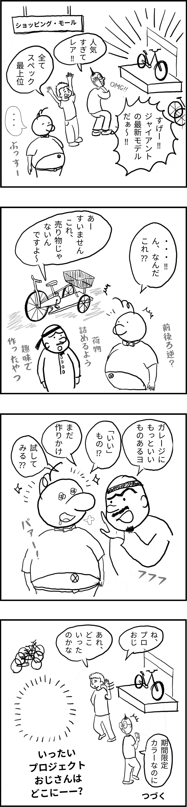

「もつれる」プロジェクトを
第5回
ぼくプロジェクト
おじさん
(17)
THE ARCHITECTURE OF INTIMACY
Building Safety through Care: Going Beyond Autonomy and Justice
In journal 16, I wrote: “We must move beyond fragmented experiences of intimacy toward a systemic framework—an Architecture of Intimacy that actively promotes safety of voice (i.e. visibility), thus sustaining diverse ontologies and multitudes of truth.” In this journal, I explore the structural framework that creates this safety of voice by further exploring care theorists that built from Gilligan's work on relational identity.
Introducing Nel Noddings... Her central quests are: “Why do we fail to care? How do we build conditions so that we reduce harming ourselves and each other?”
Introducing Harm Principle by Stuart Mill and criticisms toward it from Care Theorists, Disability and Crip Theorists, and Decolonial Scholars...
- The Harm Principle is too abstract and impersonal, rooting from separation-based ontology.
- It doesn't take into account the nuances of emotional and relational harm.
- It prioritizes negative liberty (freedom from interference) rather than positive engagement (care and be cared for).
- It risks overlooking vulnerability, especially in children, the elderly, or marginalized communities where harm isn’t always visible or physical.
- ...
Synthesis
Integrating care in tandem with the Justice system, addressing harm at all levels...
実践！
南の島の
第5回
今月の概念
(概念)
Concept of the Month
(concept)
WHAT’S LOVE* GOT TO DO WITH IT?
When Neutrality Leads to a Failure of Care and Enables Harm
For this month's journal, I want to discuss the political and thematic climate which had brought me to create Making A Fuss in June, 2024. After 10 months, I finally have more language to articulate my case better, providing our readers a real-life encounter where care, or non-care, occurs.

ウェブサイト
毎月の Journal は Project Theory Probe のウェブサイトにアーカイブされます。Project Theory Probe の活動場所である GitHub や Digital Garden へのリンクなども提供しています。